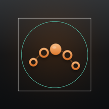
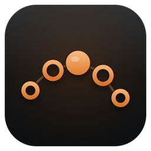

Five nodes on one arc. Three when it gets small.
The mark of the log-in screen: the wyrm’s spine as a chain of nodes, the head lit. One parametric master renders every platform’s icon (studio/tool/app_icon/build.py); nothing is drawn by hand per size. Below 32 px the mark drops to three heavier nodes so it still reads as an arc.
01 · Variants
Night is the icon; ember is the one alternative
{{v.name}}{{v.tag}}
{{v.note}}
build.py {{v.name}}
02 · Desktop
macOS, Windows, Linux
macOS dock
Apple grid: an 824 px tile at 100 px in the 1024 canvas, corner 185.4, its own soft shadow below. Ten PNGs in
macos/Runner/Assets.xcassets/AppIcon.appiconset.
Windows taskbar

app_icon.ico holds 16, 20, 24, 32, 40, 48, 64 and 256: each drawn at its size, never scaled by Windows.
Linux
linux/runner/resources/app_icon.png, 512 px, the rounded tile. For the .desktop entry of a package (deb, Flatpak, Snap); the GTK runner does not set a window icon yet.
03 · Mobile
iOS full-bleed, Android adaptive
iOS home screen
Opaque square, no corners of its own: iOS cuts them. The mark sits a little lower and larger than on macOS. Every slot of
{{a.name}}
Contents.json is rendered, RGB without alpha (App Store rule).
Android: one adaptive icon, any launcher mask
 {{m.name}}
{{m.name}}

108 dp layers; teal = 66 dp safe circle, grey = 72 dp visiblemipmap-anydpi-v26/ic_launcher.xml stacks background (the night gradient), foreground (the mark, 50/108 wide, inside the safe circle) and monochrome (white mark; Android 13 tints it for themed icons). Legacy ic_launcher.png stays for Android 7 and older.
04 · Web
Tab, install, maskable
Browser tab
WYRM Studio×
Docs
favicon.png is the 16 px small mark. Title “WYRM Studio”, theme colour #0E1113 in index.html and manifest.json.
Install icon

Icon-192/512: the rounded tile with a transparent margin.
Maskable
Icon-maskable-*: full bleed, mark inside the 80 % safe circle.
{{r.t}}
{{r.d}}